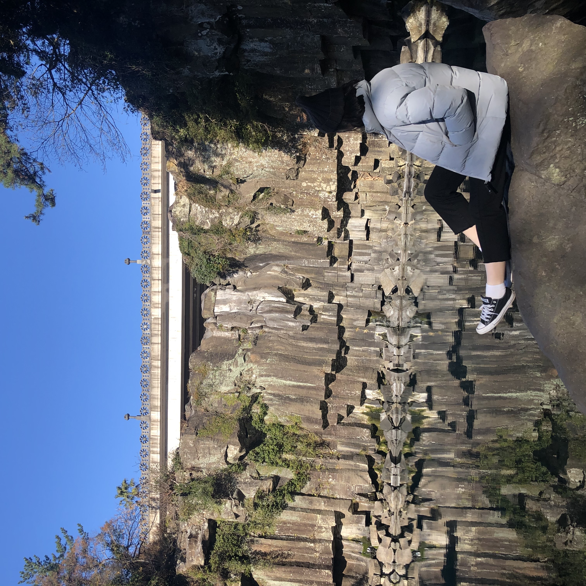

제주 천제연폭포

- 제주 서귀포시 중문동에 있는 폭포. 중문관광단지 부근, 천제교(天帝橋) 아래쪽에 상·중·하의 3단 폭포로 이어져 있다. 천제연 제1폭포는 길이 22m, 수심 21m의 소를 이루며, 이 물이 흘러내려 다시 제2·제3의 폭포를 만든다. 폭포의 양안 일대에는 난대림지대가 형성되어 있어, 한국에서는 희귀식물인 송엽란(松葉蘭) · 담팔수(膽八樹) 등이 자생하며, 그 밖에도 여러 가지 상록수와 덩굴식물·관목류가 무성하게 어우러져 있다. 이 난대림지대를 보호하기 위하여 천연기념물 제378호로 지정하였고, 특히 이 계곡의 담팔수는 지방기념물 제14호로 지정되어 있다.
- 주소 : 제주 서귀포시 천제연로 132 천제연폭포관리소
- 영업시간
- 평일 09:00 - 18:00 일몰시간에 따라 변경될 수 있음
- 주말 09:00 - 18:00
- 가격표
- 일반 2,500원
- 청소년, 군경 1,350원
- 어린이 1,350원